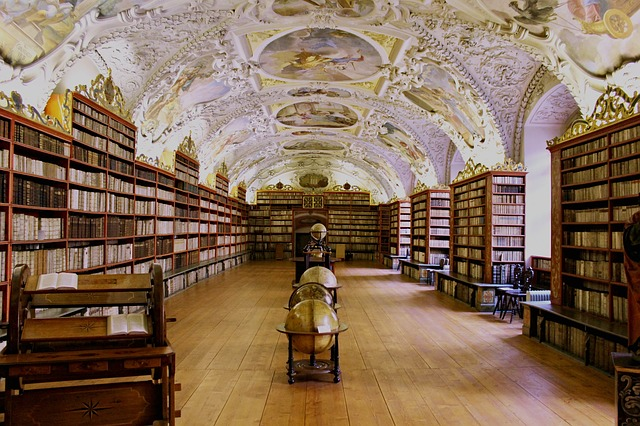

Book Shops
What better to do on a Parisian afternoon than stroll into quirky book stores filled with
vintage texts, rare magazines, or French language books? Why not? These make great conversation
starters!

Comme un Roman
Comme un Roman is a lovely bookstore that features thousands of French books on culture, travel, art, theater, and anything creative you can imagine. Great bookstore to visit and learn about French and Parisian culture. It is definitely worth an afternoon browsing!

Shakespeare & Co
An English bookstore in Paris!?! Yes, this is a popular bookstore near Notre Dame. This is also a used bookstore, so you can find books that are cheap. There are also community events that happen here such as guest speakers or poetry slams.